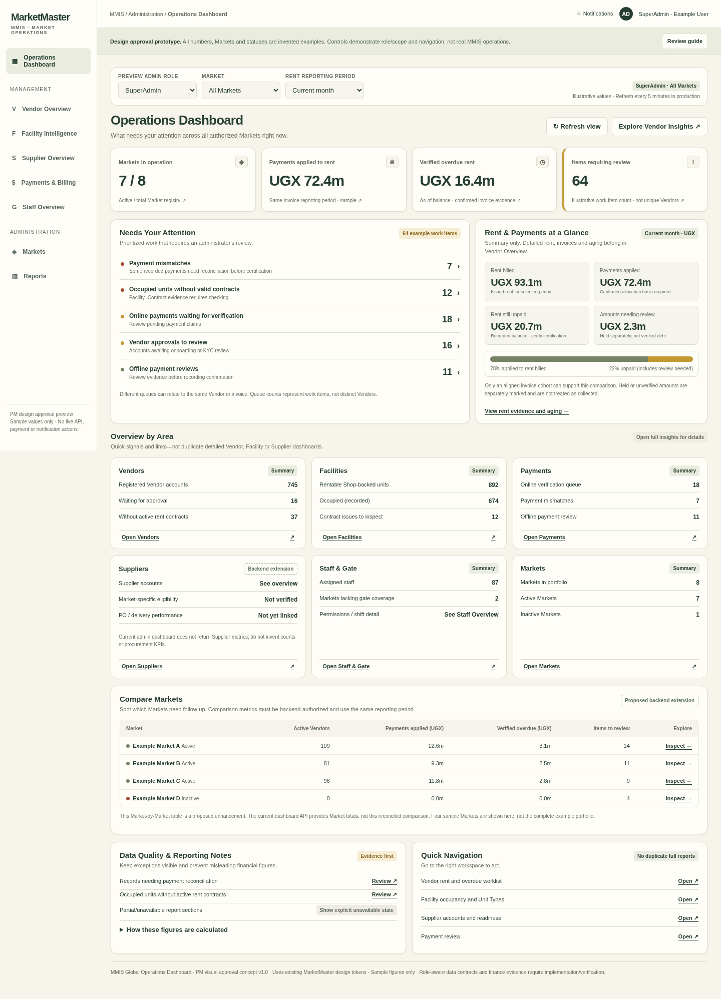
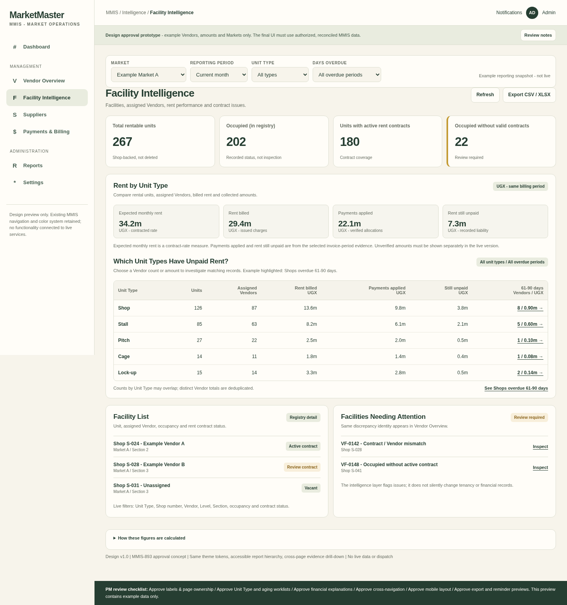
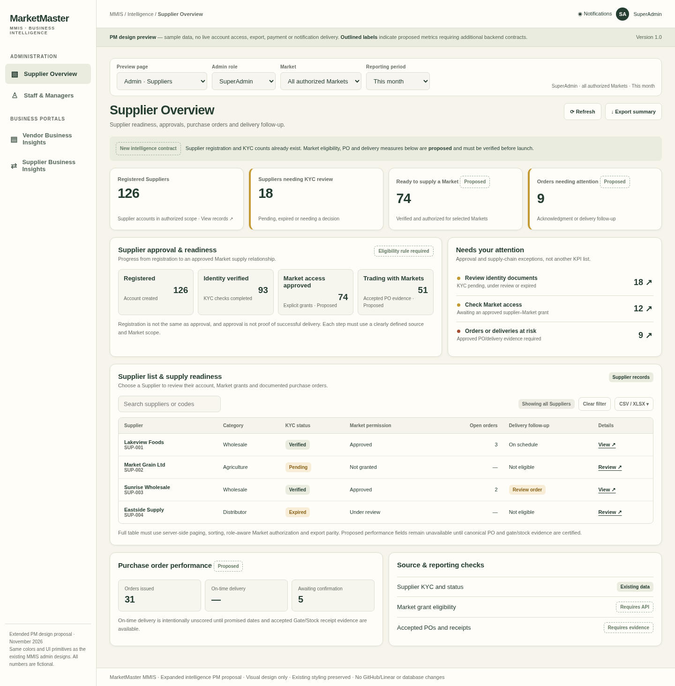
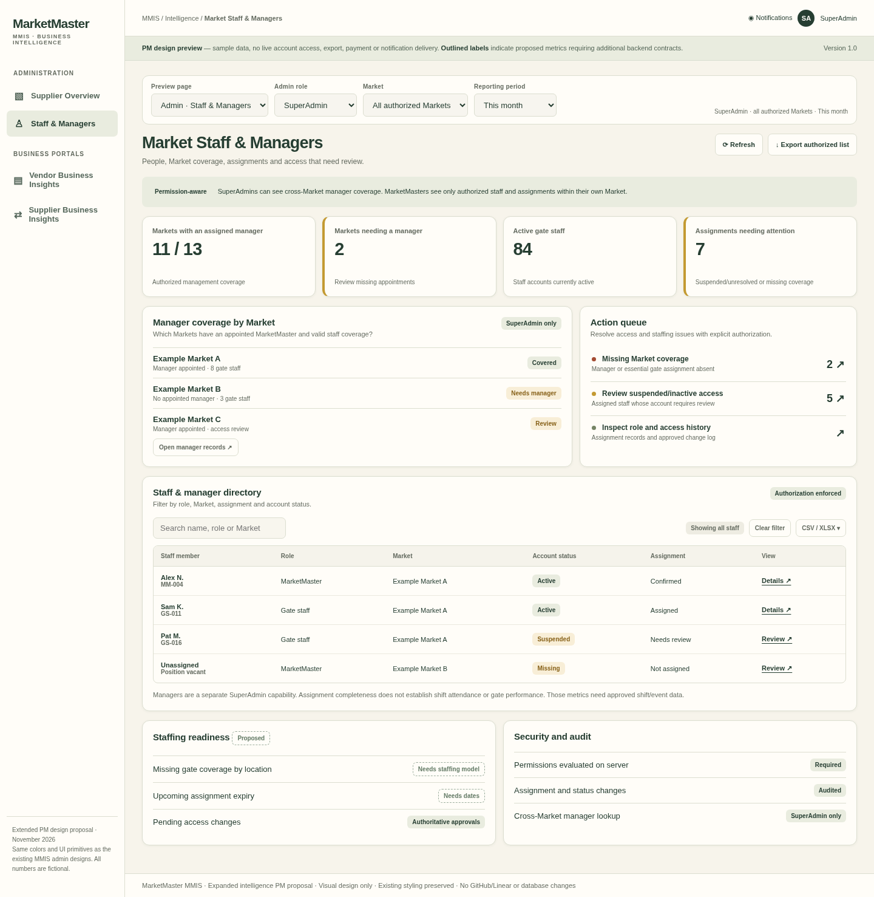
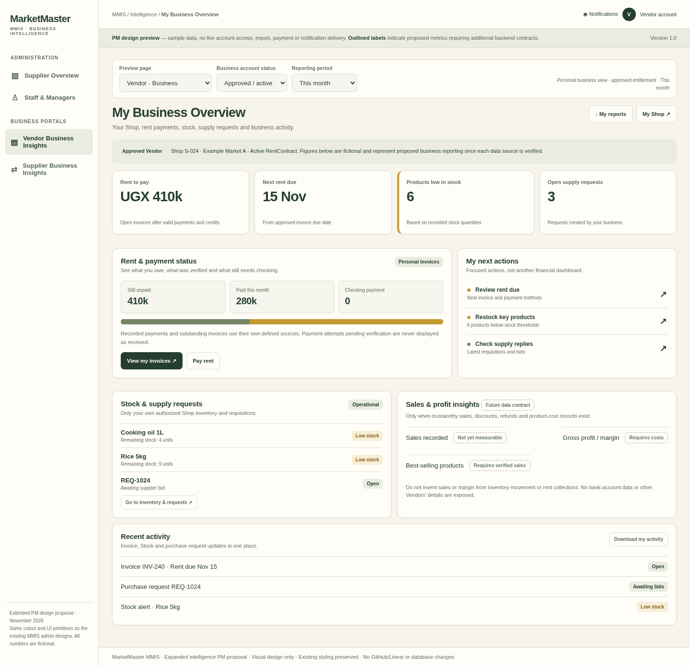
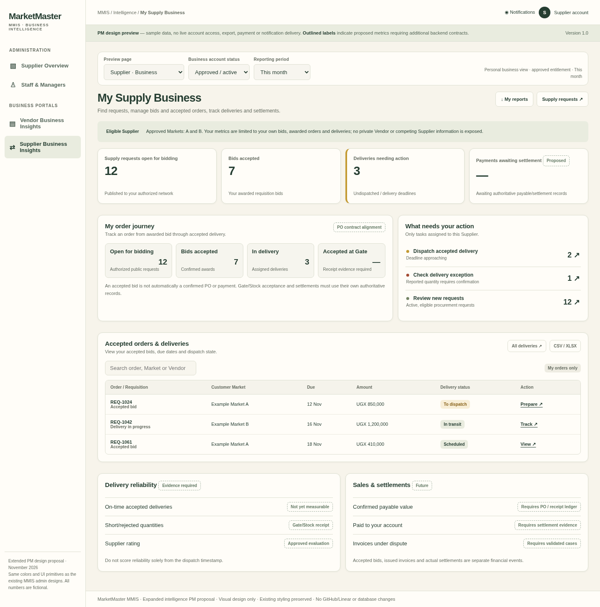

01 · Global Operations Dashboard
SuperAdmin (global and selected Market) + MarketMaster (assigned Market). Four essential KPIs, attention queues, finance summaries, domain links and an authorized Market comparison.

Seven coordinated UI experiences across three prototype files. Existing MMIS cream, dark-green, warm-white and muted colors are preserved. Interactive prototypes are offline and use fictional sample data.
SuperAdmin (global and selected Market) + MarketMaster (assigned Market). Four essential KPIs, attention queues, finance summaries, domain links and an authorized Market comparison.

Shared Market/Unit Type/aging context, Facility rent matrix, Vendor financial worklist, authorized CSV/XLSX and reminder previews.

Supplier approvals, Market eligibility, procurement worklists, on-time/fulfillment evidence and KYC review. Proposed metrics clearly identified.

SuperAdmin Market manager coverage vs MarketMaster own-Market staffing and access reviews. No cross-Market manager roster for MarketMaster.

Rent, invoices, Shop, stock and requisitions after approved tenancy. Pending onboarding shows application and Shop discovery only. Sales/profit pending verified data.

Eligible requisitions, accepted bids, dispatch/receipt pipeline and settlement only with financial evidence. Pending onboarding and Market permissions are separately modeled.
